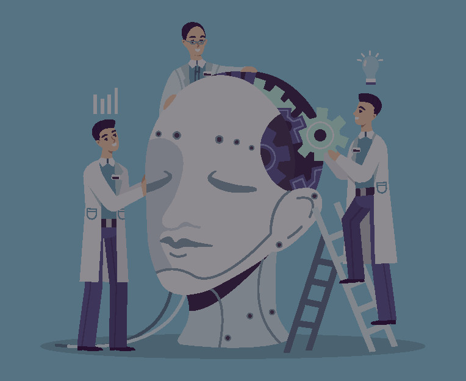

Redes neurais
1950 – 1970
Primeiros trabalhos com redes neurais criam entusiasmo por "máquinas pensantes"

Machine learning
1980 – 2010
Machine learning se populariza.

Deep learning
Hoje
O deep learning impulsiona o boom da inteligência artificial.
Inteligência Artificial
O que é e qual sua importância?
A inteligência artificial (IA) possibilita que máquinas aprendam com experiências, se ajustem a novas entradas de dados e performem tarefas como seres humanos. A maioria dos exemplos de IA sobre os quais você ouve falar hoje – de computadores mestres em xadrez a carros autônomos – dependem de deep learning e processamento de linguagem natural. Com essas tecnologias, os computadores podem ser treinados para cumprir tarefas específicas ao processar grandes quantidades de dados e reconhecer padrões nesses dados.
Como a inteligência artificial está sendo usada?
Operadoras de saúde
Aplicações de inteligência artificial podem resultar em medicamentos e leituras de raio X personalizados. Assistentes pessoais podem agir como treinadores, lembrando você de tomar seus remédios, se exercitar ou comer alimentos saudáveis.

História da Inteligência Artificial
O termo inteligência artificial foi criado em 1956, mas só se popularizou hoje graças aos crescentes volumes de dados disponíveis, algoritmos avançados, e melhorias no poder e no armazenamento computacionais. As primeiras pesquisas de IA nos anos 1950 exploraram temas como a resolução de problemas e métodos simbólicos. Na década de 1960, o Departamento de Defesa dos EUA se interessou por este tipo de tecnologia e começou a treinar computadores para imitar o raciocínio humano básico. Por exemplo, a Defense Advanced Research Projects Agency (DARPA) completou um projeto de mapeamento de ruas nos anos 1970. E a DARPA criou assistentes pessoais inteligentes em 2003, muito tempo antes de Siri, Alexa ou Cortana serem nomes comuns do nosso cotidiano. Esses primeiros trabalhos prepararam o caminho para a automação e o raciocínio formal que vemos nos computadores de hoje, incluindo sistemas de apoio à decisão e sistemas inteligentes de pesquisa que podem ser projetados para complementar e expandir as capacidades humanas. Enquanto os filmes de Hollywood e os romances de ficção científica retratam a inteligência artificial como robôs humanoides que dominam o mundo, a evolução atual das tecnologias de IA não é tão assustadora – ou tão inteligente assim. Em vez disso, a IA evoluiu para fornecer muitos benefícios específicos para todas as indústrias. Continue lendo para conhecer exemplos atuais de inteligência artificial em operadoras de saúde, varejo e mais.
Quais são os desafios de usar inteligência artificial?
A inteligência artificial irá transformar todas as indústrias, mas nós precisamos entender os seus limites. A principal limitação da IA é que ela aprende com os dados. Não há outra maneira de incorporar conhecimento a ela. Isso significa que qualquer imprecisão nos dados se refletirá nos resultados. E qualquer camada adicional de previsão ou análise precisa ser adicionada separadamente. Os sistemas de inteligência artificial de hoje são treinados para realizar tarefas bem definidas. O sistema que joga poker não pode jogar paciência ou xadrez. O sistema que detecta fraudes não pode dirigir um carro ou dar conselhos jurídicos. Na verdade, um sistema de IA que detecta fraudes no setor de saúde não pode precisamente detectar fraudes fiscais ou sobre sinistros de garantia. Em outras palavras, esses sistemas são muito específicos. Eles focam em uma única tarefa e estão longe de se comportarem como seres humanos. Da mesma maneira, sistemas de auto-aprendizagem não são sistemas autônomos. As tecnologias novelizadas de IA que você vê em filmes e na TV ainda são histórias de ficção científica. Mas computadores que podem examinar dados complexos para aprender e aperfeiçoar tarefas específicas estão se popularizando.
Trabalhando junto com a IA
A inteligência artificial não está aqui para nos substituir. Ela expande nossas capacidades e nos torna melhores naquilo que fazemos. Como os algoritmos de IA aprendem de maneira diferente dos seres humanos, eles olham para as coisas de maneira diferente. Eles podem ver relacionamentos e padrões que nos escapam. Essa parceria entre humanidade e inteligência artificial oferece muitas oportunidades. Ela pode:
- Levar inteligência analítica para indústrias e domínios nos quais ela é pouco utilizada hoje;
- Melhorar o desempenho de tecnologias analíticas existentes, como visão computacional e análise de séries temporais;
- Derrubar as barreiras econômicas, incluindo barreiras linguísticas e de tradução;
- Expandir capacidades humanas existentes e nos tornar melhores naquilo que fazemos;
- Nos dar uma melhor visão, uma melhor compreensão, uma memória melhor e muito mais.